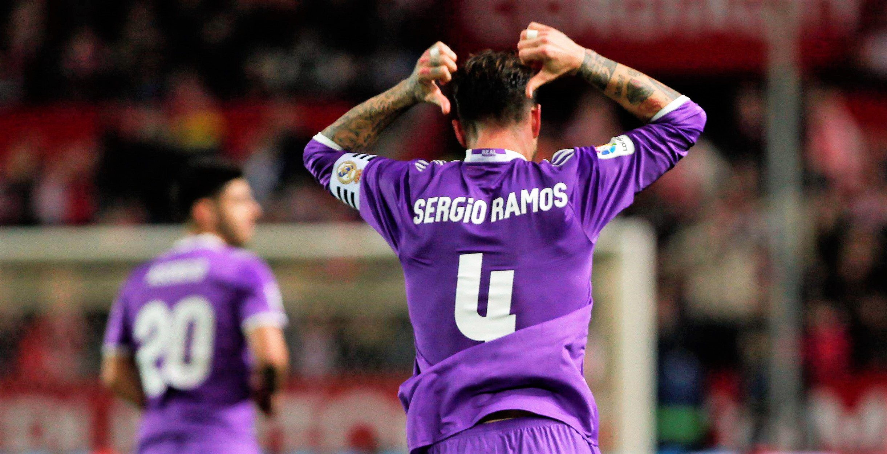

Steve Nicol, jugador del Liverpool entre 1981 y 1994, no cree que el equipo 'red' deba plantearse el fichaje de Sergio Ramos, pese a los problemas que está teniendo esta temporada en la zona defensiva. En una charla en ESPN, Nicol habló con cierta dureza sobre el central madridista."No quiero que esto suene mal, pero depende de lo desesperados que estén. Si Virgil Van Dijk tiene una recaída y va a estar más tiempo (lesionado), si Joe Gómez está luchando... preferiría optar por alguien como Upamecano, de 22 años, que va a garantizar una década. Es una especie de obviedad", explicó al ser preguntado sobre si ve posible la llegada de Ramos al Liverpool. Para Nicol, Ramos está "en decadencia". "Si no puedes conseguir a alguien como Upamecano, entonces empiezas a bajar en la lista. Claramente, quieres un jugador más joven que estará durante más tiempo. Si consiguen a Ramos sólo sería por un par de temporadas, pero creo que está un poco en decadencia. No sería el peor fichaje de la historia, haría un trabajo", añadió el exjugador del Liverpool.Sergio Ramos termina su contrato con el Real Madrid el próximo 30 de junio y a partir del 1 de enero puede negociar con cualquier club. El Madrid afronta el asunto con tranquilidad y está previsto que el jugador y Florentino Pérez mantengan una conversación en los próximos días.
© Lucía Álvarez Núñez / CONTACTO